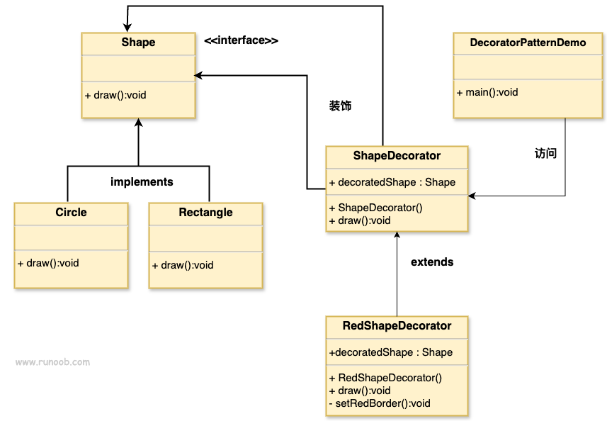

デコレーターパターン
デコレーターパターン（Decorator Pattern）は、既存のオブジェクトに新しい機能を追加することを可能にし、同時にその構造を変更しません。このタイプのデザインパターンは構造型パターンに属し、既存のクラスのラッパーとして機能します。
デコレーターパターンは、オブジェクトをデコレータークラスにラップすることで、その振る舞いを動的に変更します。
このパターンは、元のクラスをラップするデコレータークラスを作成し、クラスのメソッドシグネチャの整合性を保ちながら、追加の機能を提供します。
以下の例でデコレーターパターンの使い方を説明します。ここでは、形状クラスを変更せずに、形状に異なる色を付けます。
概要
意図
オブジェクトの構造を変更せずに、動的に追加の責務を追加します。デコレーターパターンは、継承に代わる柔軟な方法で機能を拡張します。
主に解決する問題
- 特にサブクラスの数が急激に増える状況で、継承による静的な特徴づけを避けます。
- 実行時にオブジェクトの機能を動的に追加または変更することを可能にします。
使用シーン
- 大量のサブクラスを増やさずにクラスの機能を拡張する必要がある場合。
- オブジェクトの機能を動的に追加または取り消す必要がある場合。
実装方法
- コンポーネントインターフェースを定義する：動的に責務を追加できるオブジェクトの標準を定めるインターフェースを作成します。
- 具体的なコンポーネントを作成する：そのインターフェースを実装する具体的なクラスで、基本機能を提供します。
- 抽象デコレーターを作成する：同じインターフェースを実装し、コンポーネントインターフェースへの参照を保持し、いつでも動的に機能を追加できます。
- 具体的なデコレーターを作成する：抽象デコレーターを拡張し、追加の責務を加えます。
キーコード
- Componentインターフェース：装飾可能なオブジェクトの標準を定義します。
- ConcreteComponentクラス：Componentインターフェースを実装する具体的なクラス。
- Decorator抽象クラス：Componentインターフェースを実装し、Componentインターフェースの参照を含みます。
- ConcreteDecoratorクラス：Decoratorクラスを拡張し、追加の機能を追加します。
適用例
- 孫悟空の72変化：孫悟空（ConcreteComponent）は変化（Decorator）によって新しい能力を得ます。
- 額縁で絵を飾る：絵（ConcreteComponent）は、ガラス（ConcreteDecorator）と額縁（ConcreteDecorator）を追加することで、展示効果を高めることができます。
利点
- 低結合：デコレータークラスと被装飾クラスは独立して変更でき、互いに影響しません。
- 柔軟性：機能を動的に追加または取り消すことができます。
- 継承の代替：継承以外のオブジェクト機能の拡張方法を提供します。
欠点
- 複雑性：多層の装飾はシステムの複雑性を増大させる可能性があります。
使用上のアドバイス
- 機能を動的に拡張する必要がある場合は、デコレーターパターンの使用を検討してください。
- デコレーターと具体的なコンポーネントのインターフェースを一致させ、柔軟性を確保します。
注意事項
- デコレーターパターンは継承の代替になりますが、過剰な装飾によるシステムの複雑化を避けるため、慎重に使用すべきです。
構造
デコレーターパターンには、以下の主要な役割が含まれます：
- 抽象コンポーネント（Component）：元のオブジェクトとデコレーターオブジェクトの共通インターフェースまたは抽象クラスを定義し、具体的なコンポーネントクラスの親クラスまたはインターフェースになります。
- 具体的なコンポーネント（Concrete Component）：装飾される元のオブジェクトであり、新しい機能を追加する必要があるオブジェクトを定義します。
- 抽象デコレーター（Decorator）：抽象コンポーネントを継承し、抽象コンポーネントオブジェクトを含み、抽象コンポーネントと同じインターフェースを定義します。また、コンポジションによって他のデコレーターオブジェクトを保持できます。
- 具体的なデコレーター（Concrete Decorator）：抽象デコレーターのインターフェースを実装し、抽象コンポーネントに新しい機能を追加します。具体的なデコレーターは通常、元のオブジェクトのメソッドを呼び出す前後に自身の操作を実行します。
デコレーターパターンは、複数のデコレーターオブジェクトをネストしてラップすることで、多層の機能強化を実現できます。各具体的なデコレータークラスは、オブジェクトのインターフェースの一貫性を保ちながら、新しい機能を選択的に追加できます。
実装
私たちは作成しますShapeインターフェースと、それを実装したShapeインターフェースのエンティティクラス。Shapeインターフェースの抽象デコレータークラスShapeDecorator、そしてShapeオブジェクトをそのインスタンス変数として持ちます。
RedShapeDecoratorは実装したShapeDecoratorのエンティティクラスです。
DecoratorPatternDemoクラスは使用しますRedShapeDecoratorで装飾しますShapeオブジェクト。

<img decoding="async" src="../wp-content/uploads/2014/08/20210420-decorator-1-decorator-decorator.svg" alt="装饰器模式的 UML 图" />ステップ 1
インターフェースを作成します：
Shape.java
ステップ 2
インターフェースを実装するエンティティクラスを作成します。
Rectangle.java
Circle.java
ステップ 3
実装したものを作成しますShapeインターフェースの抽象デコレータークラス。
ShapeDecorator.java
ステップ 4
拡張したものを作成しますShapeDecoratorクラスのエンティティデコレータークラス。
RedShapeDecorator.java
ステップ 5
使用しますRedShapeDecoratorで装飾しますShapeオブジェクト。
DecoratorPatternDemo.java
ステップ 6
プログラムを実行し、結果を出力します：
Circle with normal border Shape: Circle Circle of red border Shape: Circle Border Color: Red Rectangle of red border Shape: Rectangle Border Color: Redその他の拡張
周霆
598***063@qq.com
より理解しやすい例：
デコレーターパターンが既存のクラスに動的に追加機能を付与するのは、LOL、王者栄耀などDota系ゲームのヒーローレベルアップのようなものです。ヒーローがレベルアップするたびに、追加のスキルポイントでスキルを学びます。具体的なヒーローがConcreteComponent、スキルバーがデコレーターDecorator、各スキルがConcreteDecoratorです。
//Component 英雄接口 public interface Hero { //学习技能 void learnSkills(); } //ConcreteComponent 具体英雄盲僧 public class BlindMonk implements Hero { private String name; public BlindMonk(String name) { this.name = name; } @Override public void learnSkills() { System.out.println(name + "学习了以上技能！"); } } //Decorator 技能栏 public class Skills implements Hero{ //持有一个英雄对象接口 private Hero hero; public Skills(Hero hero) { this.hero = hero; } @Override public void learnSkills() { if(hero != null) hero.learnSkills(); } } //ConreteDecorator 技能：Q public class Skill_Q extends Skills{ private String skillName; public Skill_Q(Hero hero,String skillName) { super(hero); this.skillName = skillName; } @Override public void learnSkills() { System.out.println("学习了技能Q:" +skillName); super.learnSkills(); } } //ConreteDecorator 技能：W public class Skill_W extends Skills{ private String skillName; public Skill_W(Hero hero,String skillName) { super(hero); this.skillName = skillName; } @Override public void learnSkills() { System.out.println("学习了技能W:" + skillName); super.learnSkills(); } } //ConreteDecorator 技能：E public class Skill_E extends Skills{ private String skillName; public Skill_E(Hero hero,String skillName) { super(hero); this.skillName = skillName; } @Override public void learnSkills() { System.out.println("学习了技能E:"+skillName); super.learnSkills(); } } //ConreteDecorator 技能：R public class Skill_R extends Skills{ private String skillName; public Skill_R(Hero hero,String skillName) { super(hero); this.skillName = skillName; } @Override public void learnSkills() { System.out.println("学习了技能R:" +skillName ); super.learnSkills(); } } //客户端：召唤师 public class Player { public static void main(String[] args) { //选择英雄 Hero hero = new BlindMonk("李青"); Skills skills = new Skills(hero); Skills r = new Skill_R(skills,"猛龙摆尾"); Skills e = new Skill_E(r,"天雷破/摧筋断骨"); Skills w = new Skill_W(e,"金钟罩/铁布衫"); Skills q = new Skill_Q(w,"天音波/回音击"); //学习技能 q.learnSkills(); } }出力：
周霆
598***063@qq.com
このユーザーのニックネームは規約違反です
815***754@qq.com
ゲーム内のヒーロースキンの実装もデコレーターパターンに適しているのではないでしょうか。
public interface Hero { public void init(); } public class victor implements Hero { @Override public void init() { System.out.println("维克托：输出型英雄 武器：步枪"); } } public abstract class HeroDecorator implements Hero { private Hero heroDecorator; public HeroDecorator(Hero heroDecorator) { this.heroDecorator = heroDecorator; } @Override public void init() { heroDecorator.init(); } } public class GalacticWarriors extends HeroDecorator { private Hero heroDecorator; public GalacticWarriors(Hero heroDecorator) { super(heroDecorator); } @Override public void init() { super.init(); setSkin(); } private void setSkin() { System.out.println("皮肤:银河战士套装"); } } public class DecoratorPatternDemo { public static void main(String[] args) { Hero victor = new victor(); GalacticWarriors galacticWarriors = new GalacticWarriors(victor); galacticWarriors.init(); } }このユーザーのニックネームは規約違反です
815***754@qq.com
郭为宇
gos***02009986@gmail.com
『HeadFirst デザインパターン』のデコレーターパターンのコード。
package HeadFirst设计模式.装饰者模式_星巴兹订单系统; /** *区别于Shape，Beverage采用抽象类 *通常装饰者模式是采用抽象类，但是在Java中可以使用接口 */ public abstract class Beverage { public String description = "Unknown Beverage"; public String getDescription() { return description; } public abstract double cost(); }package HeadFirst设计模式.装饰者模式_星巴兹订单系统.被装饰者; import HeadFirst设计模式.装饰者模式_星巴兹订单系统.Beverage; /** *被装饰类继承Beverage抽象类，最终会通过装饰者动态添加上新的行为 */ public class DarkRoast extends Beverage { public DarkRoast() { description = "DarkRoast"; } @Override public double cost() { return 0.99; } }package HeadFirst设计模式.装饰者模式_星巴兹订单系统.装饰者; import HeadFirst设计模式.装饰者模式_星巴兹订单系统.Beverage; /** *这是继承Beverage的抽象装饰者，接下来所有具体的装饰者都要继承CondimentDecorator */ public abstract class CondimentDecorator extends Beverage { /** *所有的调料装饰者都必须重新实现该方法，因为调料的该方法应该得到扩充，方法实现不同于原来方法 */ public abstract String getDescription(); }package HeadFirst设计模式.装饰者模式_星巴兹订单系统.装饰者; import HeadFirst设计模式.装饰者模式_星巴兹订单系统.Beverage; /** *摩卡，是具体的装饰者 *用一个实例变量记录饮料（被装饰者） *装饰者和被装饰者通过组合来增强功能，实现功能的扩展，用组合来替代继承 */ public class Mocha extends CondimentDecorator { Beverage beverage; public Mocha(Beverage beverage) { this.beverage = beverage; } @Override public String getDescription() { return beverage.getDescription() + ", Mocha"; } @Override public double cost() { return 0.20 + beverage.cost(); } }テスト：
package HeadFirst设计模式.装饰者模式_星巴兹订单系统; import HeadFirst设计模式.装饰者模式_星巴兹订单系统.被装饰者.DarkRoast; import HeadFirst设计模式.装饰者模式_星巴兹订单系统.装饰者.Mocha; public class TestStarbuzzCoffee { public static void main(String[] args) { Beverage beverage1 = new DarkRoast(); beverage1 = new Mocha(beverage1); beverage1 = new Mocha(beverage1); System.out.println(beverage1.getDescription()+ " $" + beverage1.cost()); } }出力：
郭为宇
gos***02009986@gmail.com
これは小明ではない
xia***ng.chn@foxmail.com
もう少し複雑な例
『絶地求生：刺激戦場』（PUBG Mobile）というゲームでは、誰もが知っています。
銃には発砲機能があります：
public interface Gun { /** * 开火直至打空子弹 */ public void fire(); } public class Kar98K implements Gun { @Override public void fire() { System.out.println("砰*5"); } }弾倉を装飾して銃の発砲機能を変更します：
public abstract class AbstractMagazine implements Gun { private Gun gun; public AbstractMagazine(Gun gun) { this.gun = gun; } @Override public void fire() { gun.fire(); } } public class Magazine extends AbstractMagazine { public Magazine(Gun gun) { super(gun); } @Override public void fire() { System.out.println("砰*10"); } }テスト：public class Demo { public static void main(String[] args) { System.out.println("[捡起一把98K]"); Gun gun = new Kar98K(); System.out.println("[开炮！]"); gun.fire(); System.out.println("[装饰上弹匣]"); gun = new Magazine(gun); System.out.println("[开炮！]"); gun.fire(); } }出力：
次に4倍スコープを装着して、4倍で狙う機能を追加します。これは銃には元々ない機能です。
銃のインターフェース機能を拡張します：
public interface Aim4X extends Gun { public void aim4X(); } public abstract class AbstractTelescope4X implements Aim4X { private Gun gun; public AbstractTelescope4X(Gun gun) { this.gun = gun; } @Override public void fire() { gun.fire(); } } public class Telescope4X extends AbstractTelescope4X { public Telescope4X(Gun gun) { super(gun); } @Override public void aim4X() { System.out.println("已进入4倍瞄准模式"); } } /** * 55式4倍镜 */ public class Telescope4X55 extends AbstractTelescope4X { public Telescope4X55(Gun gun) { super(gun); } @Override public void aim4X() { System.out.println("4倍超级瞄准已部署"); } }テスト：
public class Demo { public static void main(String[] args) { System.out.println("[捡起一把98K]"); Gun gun = new Kar98K(); System.out.println("[装饰上4倍镜]"); Aim4X aim4X = new Telescope4X(gun); System.out.println("[4倍瞄准]"); aim4X.aim4X(); System.out.println("[开炮！]"); aim4X.fire(); System.out.println("[先装饰上弹匣]"); gun = new Magazine(gun); System.out.println("[再装饰上4倍镜]"); aim4X = new Telescope4X(gun); System.out.println("[4倍瞄准]"); aim4X.aim4X(); System.out.println("[开炮！]"); aim4X.fire(); System.out.println("[人体描边？换上我的55式4倍镜]"); aim4X = new Telescope4X55(gun); System.out.println("[4倍瞄准]"); aim4X.aim4X(); System.out.println("[开炮！]"); aim4X.fire(); } }出力：
次に8倍スコープを装着します。4倍で狙う機能も、8倍で狙う機能も持っています。
インターフェースを拡張します：
public interface Aim8X extends Aim4X { public void aim8X(); } public abstract class AbstractTelescope8X implements Aim8X { private Gun gun; public AbstractTelescope8X(Gun gun) { this.gun = gun; } @Override public void fire() { gun.fire(); } } public class Telescope8X extends AbstractTelescope8X { public Telescope8X(Gun gun) { super(gun); } @Override public void aim8X() { System.out.println("进入8倍瞄准模式"); } @Override public void aim4X() { System.out.println("进入4倍瞄准模式"); } }テスト：
public class Demo { public static void main(String[] args) { System.out.println("[先装饰上弹匣]"); gun = new Magazine(gun); System.out.println("[再装饰上8倍镜]"); aim8X = new Telescope8X(gun); System.out.println("[8倍瞄准]"); aim8X.aim8X(); System.out.println("[敌人很近，换4倍]"); aim8X.aim4X(); System.out.println("[开炮！]"); aim8X.fire(); } }出力：
4倍狙いモードに入ります [発砲！] バン*10これは小明ではない
xia***ng.chn@foxmail.com
Lonnie
354***093@qq.com
Swift 実装:
protocol Shape { func draw() } protocol ShapeDecorator: Shape { var decoratedShape: Shape { get } } class Decorator { struct Rectangle: Shape { func draw() { print("Shape: Rectangle") } } struct Circle: Shape { func draw() { print("Shape: Circle") } } struct RedShapeDecorator: ShapeDecorator { var decoratedShape: Shape func draw() { decoratedShape.draw() setRedBorder(decoratedShape) } func setRedBorder(_ shape: Shape) { print("Border Color: Red") } } func execute() { let circle = Circle() let redCircle = RedShapeDecorator(decoratedShape: Circle()) let redRectangle = RedShapeDecorator(decoratedShape: Rectangle()) print("Circle with normal border:") circle.draw() print("Circle of red border") redCircle.draw() print("Circle of red rectangle") redRectangle.draw() } }Lonnie
354***093@qq.com
Siskin.xu
sis***@sohu.com
Python 方式：
# Decorator Pattern with Python Code from abc import abstractmethod,ABCMeta # 创建Shape接口 class Shape(metaclass=ABCMeta): @abstractmethod def draw(self): pass # 实现Shape的实体类：Rectangle、Circle class Rectangle(Shape): def draw(self): print("Shape: Rectangle") class Circle(Shape): def draw(self): print("Shape: Circle") # 创建实现了Shape接口的抽象装饰类ShapeDecorator类 class ShapeDecorator(Shape): _decoratedShape = None def __init__(self,inDecoratedShape): self._decoratedShape = inDecoratedShape def draw(self): self._decoratedShape.draw() # 创建扩展了ShapeDecorator类的实体装饰类对象 class RedShapeDecorator(ShapeDecorator): def __init__(self,inDecoratedShape): ShapeDecorator.__init__(self,inDecoratedShape) def draw(self): self._decoratedShape.draw() self.setRedBorder(self._decoratedShape) def setRedBorder(self,inDecoratedShape): print("Border Color: Red") # 调用输出 if __name__ == '__main__': aCircle = Circle() aRedCircle = RedShapeDecorator(Circle()) aRedRectangle = RedShapeDecorator(Rectangle()) print("Circle with normal border") aCircle.draw() print("\nCircle of red border") aRedCircle.draw() print("\nRectangle of red border") aRedRectangle.draw()Siskin.xu
sis***@sohu.com
lz
luz***1226@126.com
C++言語
/* 练习：修饰模式。 业务：处理日志字符串，关键词屏蔽(业务上显然这个要优先处理)、日期添加 */ // 字符串父类 class Text { public: Text() {}; virtual void setText(string t) = 0; virtual string getText() = 0; }; // 字符串实现 class NormalText : public Text { private: string m_string; public: NormalText() {}; virtual void setText(string t) { cout << "NormalText中存储字符串"<< endl; m_string = t; }; string getText() { return m_string; }; }; // 字符串修饰器 class TextDecorator : public Text { private: shared_ptr<Text> m_text; public: TextDecorator() {}; void Decorate(shared_ptr<Text> & text) { m_text = text; } string getText() { return m_text->getText(); }; virtual void setText(string t) { m_text->setText(t); }; }; // 字符串修饰器具体：关键词屏蔽 class TextDecorator_blockword : public TextDecorator { private: string m_blockword; // 屏蔽词 public: TextDecorator_blockword(string bw) :m_blockword(bw) {}; void setText(string s) { cout << "屏蔽词语，屏蔽词为 "<< m_blockword << endl; // 循环找到每个屏蔽词，并替换为* for (std::size_t found = s.find(m_blockword); found != std::string::npos; found = s.find(m_blockword)) { s.replace(found, m_blockword.size(), m_blockword.size(), '*'); // 屏蔽词替换成*号 } TextDecorator::setText(s); }; }; // 字符串修饰器具体：时间添加 class TextDecorator_addtime : public TextDecorator { public: TextDecorator_addtime() {}; void setText(string s) { cout << "添加时间戳" << endl; s = (string)"[2022-2-22 22:22:22] " + s; TextDecorator::setText(s); }; }; // main 中执行 void decorator_pattern_v2() { // 字符串 string s("what a stupid son of a bitch. --- JoeBiden January,2022"); // 原始字符创类 shared_ptr<Text> text((Text*)(new NormalText())); // 创建修饰器 shared_ptr<Text> addtime((Text*)(new TextDecorator_addtime())); // 增加时间戳 shared_ptr<Text> blk_bitch((Text*)(new TextDecorator_blockword("bitch"))); // 屏蔽 bitch shared_ptr<Text> blk_jb((Text*)(new TextDecorator_blockword("22"))); // 屏蔽 22 // 加载修饰器 dynamic_cast<TextDecorator_addtime*>(addtime.get())->Decorate(text); dynamic_cast<TextDecorator_blockword*>(blk_bitch.get())->Decorate(addtime); dynamic_cast<TextDecorator_blockword*>(blk_jb.get())->Decorate(blk_bitch); blk_jb->setText(s); cout << "原始字符串：" << s << endl; cout << "处理后字符串：" << text->getText() << endl; }コンソール出力：
注意！ デコレータの順序が重要です。間違えると、タイムスタンプ内の22文字の文字列もブロックされます！
lz
luz***1226@126.com
TooHandsomeException
ywt***@163.com
古い団地の住民棟にエレベーターを設置する：
// BuildingInterface.java public interface BuildingInterface { void build(); } // Building.java public class Building implements BuildingInterface { @Override public void build() { System.out.println("修建楼房"); } } // BuildingDecorator.java public abstract class BuildingDecorator implements BuildingInterface { protected BuildingInterface building; public BuildingDecorator(BuildingInterface building) { this.building = building; } @Override public void build() { building.build(); addDecorate(); } protected abstract void addDecorate(); } // Elevator.java public class Elevator extends BuildingDecorator { public Elevator(BuildingInterface building) { super(building); } @Override public void addDecorate() { System.out.println("加装电梯"); } } // Demo.java public class Demo { public static void main(String[] args) { Building building = new Building(); Elevator elevator = new Elevator(); elevator.build(); } }出力：
TooHandsomeException
ywt***@163.com
RUNOOB
429***967@qq.com
デコレータパターンは、オブジェクトの構造を変更することなく、実行時に動的に機能を追加・削除することを可能にします。サブクラスによる拡張によって引き起こされるクラス爆発の問題を回避でき、コードをより柔軟で拡張可能にします。また、デコレータパターンはオープン・クローズドの原則にも従っており、既存のコードを変更することなく、新しいデコレータクラスを簡単に追加できます。
以下は簡単なデコレータパターンの例です。コーヒーショップがあり、顧客のニーズに応じてコーヒーに追加のトッピングを追加できるとします。
// 抽象组件 - 咖啡 interface Coffee { String getDescription(); double getCost(); } // 具体组件 - 普通咖啡 class PlainCoffee implements Coffee { public String getDescription() { return "Plain Coffee"; } public double getCost() { return 2.0; } } // 抽象装饰器 - 咖啡装饰器 abstract class CoffeeDecorator implements Coffee { protected Coffee decoratedCoffee; public CoffeeDecorator(Coffee decoratedCoffee) { this.decoratedCoffee = decoratedCoffee; } public String getDescription() { return decoratedCoffee.getDescription(); } public double getCost() { return decoratedCoffee.getCost(); } } // 具体装饰器 - 牛奶装饰器 class MilkDecorator extends CoffeeDecorator { public MilkDecorator(Coffee decoratedCoffee) { super(decoratedCoffee); } public String getDescription() { return super.getDescription() + ", Milk"; } public double getCost() { return super.getCost() + 0.5; } } // 具体装饰器 - 糖浆装饰器 class SyrupDecorator extends CoffeeDecorator { public SyrupDecorator(Coffee decoratedCoffee) { super(decoratedCoffee); } public String getDescription() { return super.getDescription() + ", Syrup"; } public double getCost() { return super.getCost() + 0.8; } } // 客户端代码 public class Main { public static void main(String[] args) { Coffee coffee = new PlainCoffee(); System.out.println(coffee.getDescription() + ", Cost: " + coffee.getCost()); Coffee milkCoffee = new MilkDecorator(coffee); System.out.println(milkCoffee.getDescription() + ", Cost: " + milkCoffee.getCost()); Coffee syrupCoffee = new SyrupDecorator(coffee); System.out.println(syrupCoffee.getDescription() + ", Cost: " + syrupCoffee.getCost()); Coffee milkSyrupCoffee = new SyrupDecorator(milkCoffee); System.out.println(milkSyrupCoffee.getDescription() + ", Cost: " + milkSyrupCoffee.getCost()); } }上記の例では、抽象コンポーネントインターフェース Coffee と具体的なコンポーネントクラス PlainCoffee を定義しました。次に、抽象デコレータクラス CoffeeDecorator と、具体的なデコレータクラス MilkDecorator および SyrupDecorator を定義しました。デコレータオブジェクトをネストし続けることで、コーヒーにさまざまなトッピングを追加できます。
RUNOOB
429***967@qq.com